What you are about to do
Seven steps, spread over however long you like. Most people are done inside half an hour, and you can stop after any step and pick it up later — this page remembers where you got to.
Almost all of the work is ours. Your part is short and none of it needs any technical knowledge, but it cannot be skipped, because it is the part that makes everything yours instead of ours.
Designing and building the site
We do it
Finding you a domain name that is free
We do it
Opening one account, on your email
Yours
Choosing your own password
Yours
Paying for the domain, about $10.50 a year
Yours
Clicking the two confirmation emails
Yours
Inviting us in, and removing us afterwards
Yours
Putting the site up and connecting the domain
We do it
Setting up the contact form
We do it
Checking it all works before we call it done
We do it
What you end up owning
One account and a folder of files. The account is in your name, with your email on it and a password only you know — we never have it.
- Your domain name. The address people type. About $10.50 a year, at cost, on your card. Nobody else can take it while it is renewed.
- Your hosting. Where the site actually sits, in the same account as the domain. Free at the size of a one-page site, and it stays free.
- Your enquiry form. The thing that emails you when somebody fills in the contact form. It runs inside the same account and costs nothing, however many enquiries you get.
- The files. The website itself, and your photographs.
There is nothing to renew with us and no account of ours that your site depends on. If you never speak to us again, it stays up.
Step 1 of 7
Before you start
Two things to have on hand. There is no software to install and nothing to download — it all happens in a browser, and you can do it on a phone.
An email address you will still have in five years
This is the important one. Everything gets built on it, and it is how you prove the site is yours if it is ever disputed. A personal address you have had for years is better than a new one made for the business, and far better than one that belongs to an internet provider you might leave.
A card, for the domain
The domain name is the one thing with a running cost — about $10.50 a year at the time of writing. It goes on your card so the renewal is yours and never lapses because of us. It is the only payment detail anyone will ask you for.
Why not a .com.au?
You can have one, and some people prefer the local look. It costs you more work: .com.au has to be bought from a separate Australian company, it requires an active ABN held in the same name for as long as you keep the domain, and it adds a step where you copy settings between two accounts.
A .com needs no ABN, costs about the same, and is bought in the same place as everything else — which is why it is what we suggest. Tell us if you would rather have the .com.au and we will walk you through the extra part.
Make your account
One account holds everything: the domain, the website, and the contact form. It is free and it takes about a minute.
-
Go to dash.cloudflare.com/sign-up
Cloudflare is the company that will hold your domain and run your site. They are one of the largest on the internet; you have used them today without noticing.
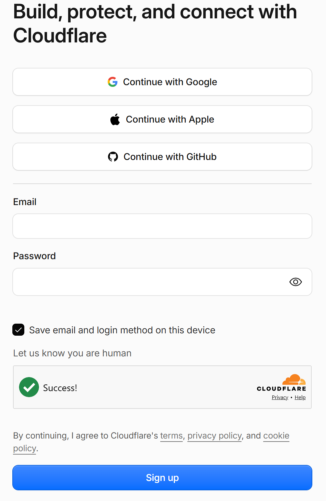
- If you have a Gmail address, use "Continue with Google". It is the quickest way in and there is no new password to remember or lose. The account is just as much yours either way.
- Otherwise, type the email address you chose on the last step.
- And pick a password. Write it down somewhere real before you click. We never see it and we will never ask for it — anybody who does ask is not us.
- Sign up.
-
Click the confirmation email
They email you straight away to check the address is real. If it has not arrived in a few minutes, look in spam.
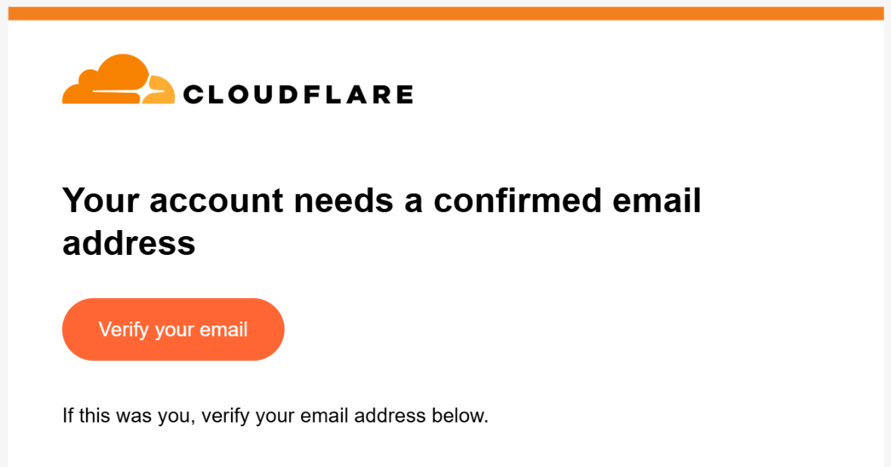
- One click on Verify your email, and this step is done.
Buy your domain
The address people type to reach you. You buy it inside the account you just made, which is the reason there is nothing to connect up afterwards.
-
Find the domain page and search for the name we sent you
We send you two or three that are actually available, so you are choosing rather than hoping.
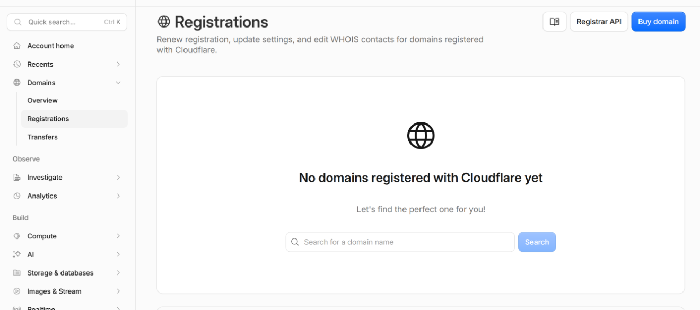
- In the menu down the left, open Domains, then Registrations.
- Type the name into the search box and press Search. It will say whether it is free and what it costs.
It will say "No domains registered with Cloudflare yet". That is expected — you are about to register the first one. -
Fill in who owns it
This is the part that makes the name legally yours, so it is your details here and not ours.
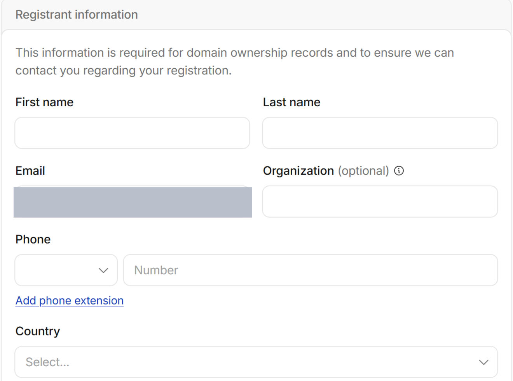
- Your name. Not a business name — this is the person who owns it.
- Your email. It fills itself in from the account you just made, which is correct. Leave it.
- Phone and country, then scroll on down.
Organisation is marked optional and you can leave it empty. -
Check three things on the right, then pay
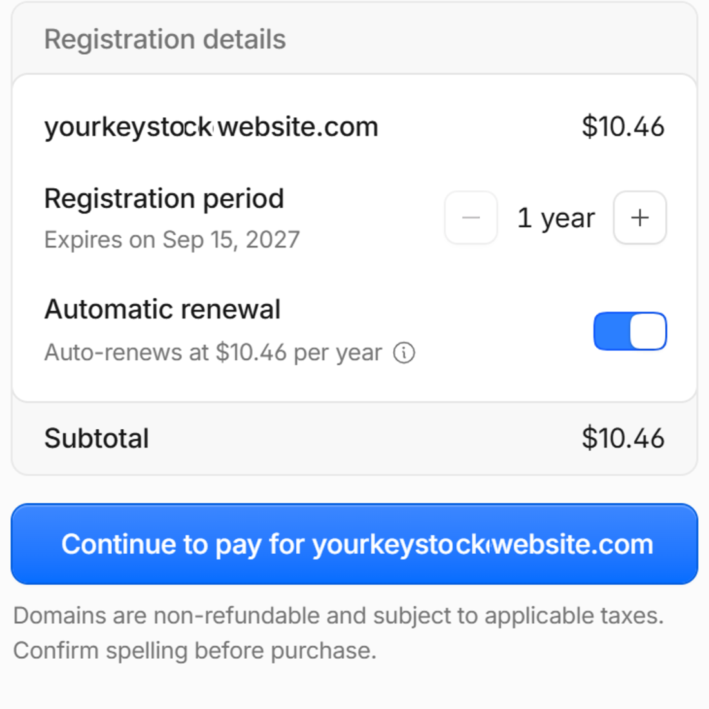
- The name, spelled exactly right. Read it once more. Domains are not refundable, and a typo is a different name that somebody has now bought.
- Automatic renewal should be on — it is on by default, and the blue means on. Leave it that way. It is the single most useful switch on this page.
- Pay. About ten dollars fifty for the year, on your card.
Cloudflare sells domains at what they cost them — no mark-up, no cheap first year that jumps later.
The one thing that can really go wrong
If the domain lapses, the site goes dark and somebody else can buy your name. That is why automatic renewal stays on, and why the card should be one that will not quietly expire. Put a yearly reminder in your phone as well.
Nobody asked me to change any settings. Is that right?
Yes. The page says your domain will automatically use Cloudflare's nameservers, and because you bought it in the same account that runs the site, the two are already joined up. Buying a domain somewhere else is what creates the fiddly step — and that is the step we removed.
Let us in
One invitation, which you can withdraw the moment we are finished. Your password is never part of this.
-
Open Members, and start an invitation
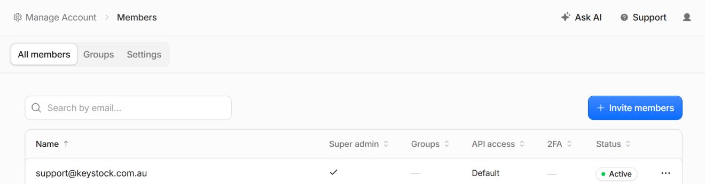
- Top left of the dashboard: Manage Account, then Members.
- Then the blue Invite members button.
The members already listed are you, and us once the invitation is accepted. -
Put in the address we gave you
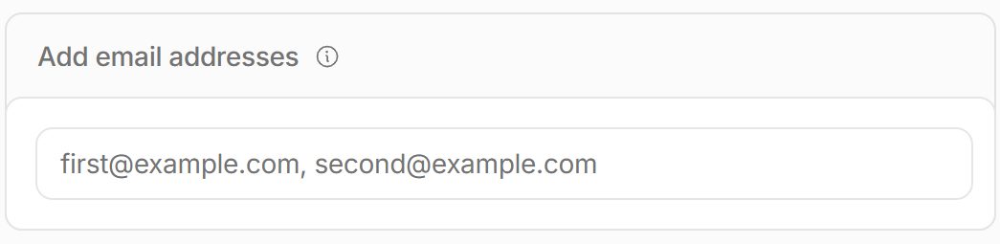
- One address — the one we sent you. Ignore the "second@example.com" in the grey text; that is just an example of the format.
-
Choose what we are allowed to do
This screen looks more complicated than the job it is doing. You need one thing from it.
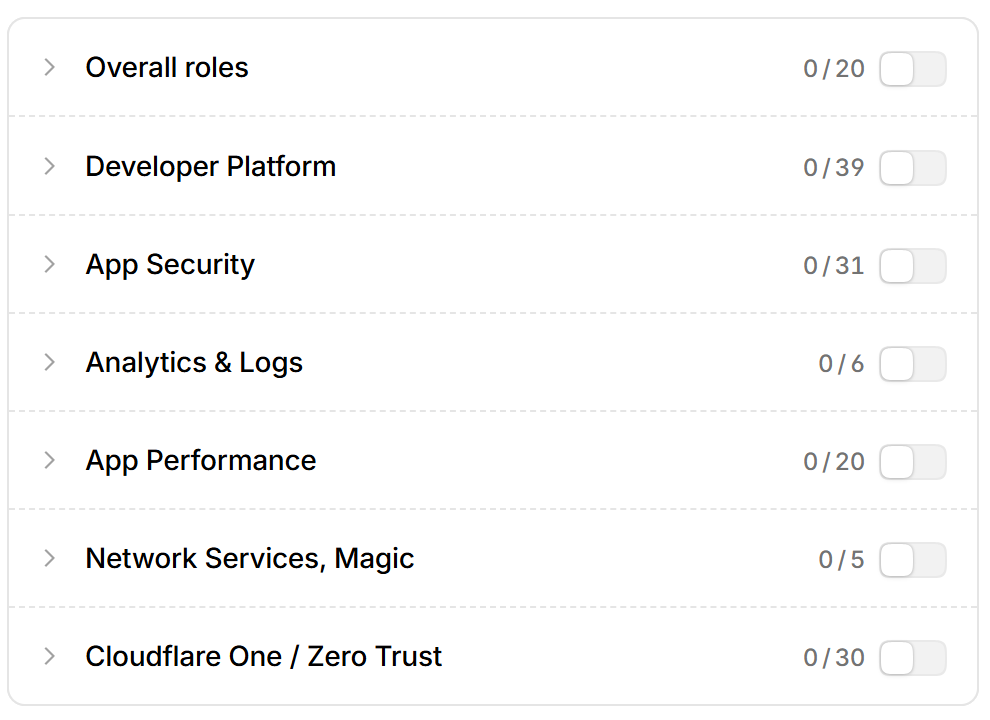
- Click the little arrow beside Overall roles to open it, and find Administrator in the list.
- Turn that one on. Leave every other row on this screen alone — you do not need Developer Platform, App Security or any of the others.
Administrator lets us upload your website and set up your contact form. It does not let us change your password, see your card, or take the domain. -
Two buttons, in this order
This is the one place people get stuck, because the first button does not look like it finishes anything — and it doesn't.
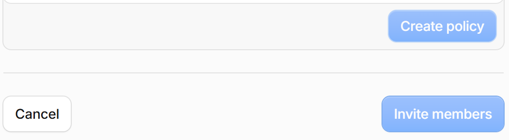
- Create policy first. This saves the permission you just chose. Nothing is sent yet.
- Then Invite members. That is what actually sends it. Both buttons go dark once they are ready to press.
We build it
Nothing for you to do here. This is the part that is entirely ours, and you do not need to be around for it.
Putting the site up, pointing your domain at it, turning on the security certificate so the address shows a padlock, and setting up the contact form. It usually takes us under an hour.
You get a message when your name brings up your site. If you want to watch it happen, type your domain into a phone every so often — it goes from nothing to your website in one step, not gradually.
It has been a while and my domain still shows nothing
Give it an hour from when we tell you it is live. A brand new domain sometimes takes that long to reach every corner of the internet, and there is nothing wrong at either end while it does.
After that, tell us. It is ours to fix.
Check enquiries arrive
The contact form on your site emails you when somebody fills it in. There is no separate account and nothing to pay — it runs inside the account you already made.
-
Tell us which inbox enquiries should land in
It can be a different address from the one the account is built on. Plenty of people want the account on a personal address and the enquiries on a work one.
-
Click one more confirmation email
Cloudflare checks the inbox is really yours before it will send anything to it.
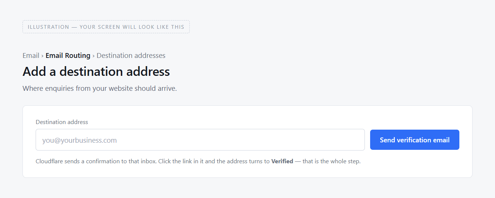
- The inbox you want enquiries to arrive in.
- Send the confirmation, then click the link in it. The address turns to Verified and that is the step done.
Drawn rather than photographed — this screen only exists once you own a domain, so there was nothing to photograph yet. Your version will have your own address in it. -
We send a test enquiry and you tell us it landed
We fill in your own contact form while you have your inbox open. You are checking the real thing works rather than taking our word for it.
New enquiry from your websiteName, phone, and what they wroteIf this does not arrive, we are not finishedCheck the spam folder too, and mark it "not spam" if it lands there. That teaches your mail provider to trust the next one.
Is there a limit on how many enquiries I can get?
No. Because the form sends to an address you have confirmed is yours, it does not count against any quota — it is free however busy you get.
Remove our access
The last step, and the one that makes the account entirely yours again.
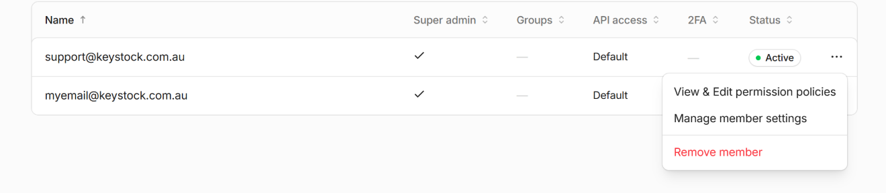
- Find our row — not yours — and click the three dots at the end of it.
- Remove member. It is the red one at the bottom of the menu, and red here only means permanent, not dangerous.
That is the whole thing done. The account, the domain, the site and the contact form are all yours, on your email, with a password we have never seen.
The rest of this page is reference — how to change things later, what to keep an eye on, and what to do if something ever looks wrong. There is nothing left to set up.
Changing your site
New hours, a new phone number, a price that has moved, a note that you are shut for a week. Here is how that works today, and what is coming.
Today: you ask, and we quote it
Send us what you want changed. Small text changes are quick and we will tell you the cost before we touch anything — there is no hourly meter running and nothing is done until you say yes.
This is worth being straight about, because it is the one part of the deal that is not "pay once and walk away": the site is yours and costs you nothing to keep running, but us changing it for you is a job like any other.
What counts as a small change?
Wording, hours, phone numbers, prices, adding or removing a service, swapping a photograph. Things that fit the page as it already is.
A new section, a second page, or a different layout is a bigger job and we will say so rather than quietly charging you for one.
Can I edit the files myself?
Yes. You own them, and the site is a single HTML file — anyone who works with websites can edit it, and so can you if you are willing to learn. You do not need our permission and you will not break anything that cannot be put back, because you have the original.
Coming: changing it yourself, from your phone
We are building an editor that will let you change the simple things — hours, phone number, prices — by tapping them on your own page, with no code and no password to remember. It is not finished, and we would rather tell you that than describe something you cannot use yet.
When it exists it will be free for anyone we have built a site for, and it will change nothing about who owns what. Your site will not depend on it: the editor writes changes to your site, and if it were to stop working tomorrow your website would carry on exactly as it is.
Keeping it working
Three things need occasional attention. All three are yours, and none of them takes longer than a minute.
1. The domain renews once a year
Auto-renew handles it as long as the card on file is current. If you get a new card, update it. This is the only one that can actually take your site off the internet.
2. Test the enquiry form every few months
Fill in your own contact form and check it arrives. Silence from a contact form looks exactly the same whether it is broken or nobody is enquiring, which is why it is worth checking rather than assuming.
3. Keep your Google listing right
Your Google Business Profile is worth more than the website for being found, and it is free. Keep the hours accurate, especially at Christmas, and ask happy customers for reviews. If you change your phone number, change it there too.
If something looks wrong
In rough order of how often it actually happens.
The site will not load at all
Nine times out of ten the domain has lapsed. Open your account, go to Domains then Registrations, and see whether it says expired — if it does, renewing usually brings the site straight back within the hour.
If the domain is fine, check whether it is only you: try it on mobile data with the wi-fi off. If it works there, the problem is your own connection, not the site.
Enquiries have stopped arriving
Send yourself one through the form. If it arrives, they were probably going to spam — find an old one, mark it "not spam", and add the sender to your contacts.
If it does not arrive at all, tell us. There is no monthly limit to run into and nothing for you to reconfigure — it is ours to look at.
Something on the site is wrong or out of date
Tell us what it should say. Nothing on the page is dangerous to change and we keep every previous version, so putting it back how it was is always possible.
My phone number changed
Send us the new one and we will change it everywhere on the site at once — it appears in several places, including the tap-to-call button.
Change it on your Google Business Profile too. That is separate, it is not something the website can update for you, and more people will find you through it than through the site.
I have lost my password
Use "forgot password" on the sign-in page. The reset goes to the email address the account was built on — which is why that address matters more than the password does, and why it should be one you will keep.
Taking it somewhere else
Written down because a promise that you are not locked in is worth nothing unless the exit is documented.
You do not need our permission or our help, and nothing has to be unpicked from our end, because nothing of yours runs through us.
- To another designer. Give them the login to your account and the folder of files. That is genuinely all there is.
- To a different host. Your domain is not tied to where the site is hosted. Point it wherever you like, whenever you like, from your own account.
- Away from the website entirely. Delete the site from your account. Keep the domain if you ever want it again — it is cheap, and it stops anyone else using your name.
If you want us to help hand it over, we will, and we will not charge you for that.